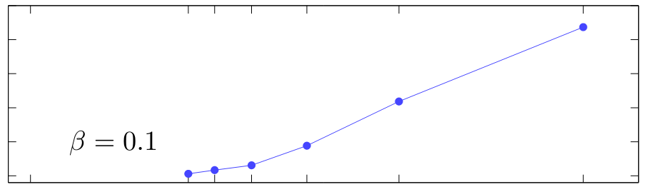

My work seeks to elucidate the interconnection between the limits of physics, measurement, and computation. In one direction, this means determining what information theory and computer science can tell us about physics and, more practically, showing how they can help us to design better measurement devices and better simulation algorithms. In the other direction, this means deciphering how the constraints imposed by specific physical systems (e.g., symmetries, spatial locality, and noise) impact information-theoretic and computational limits on data processing and extraction.
Publication List
Also see my Google Scholar profile. * denotes equal contribution.
2025
|
"Lieb-Mattis states for robust entangled differential phase sensing." R Kaubruegger, D F Padilla, A Shankar, C Hotter, S R Muleady, J Bringewatt*, Y Baamara, E Abbasgholinejad, A V Gorshkov, K Molmer, J K Thompson, A M Rey. Preprint. (2025), [arXiv:2506.10151] |
|

|
"On the stability of solutions to Schrodinger's equation short of the adiabatic limit." J Bringewatt*, M Jarret*, T C Mooney* Philos. Trans. R. Soc. A. Accepted. (2025), [arXiv:2303.13478] |
|
"Resiliance-runtime tradeoff relations for quantum algorithms." L P Garcia-Pintos, T O'Leary, T Biswas, J Bringewatt, L T Brady, Y-K Liu. Rep. Prog. Phys. 88 037601 (2025), [arXiv:2408.02764] |
2024
|
"Exponential entanglement advantage in sensing correlated noise." Y-X Wang, J Bringewatt, A Seif, A J Brady, C Oh, A V Gorshkov Preprint. (2024), [arXiv:2410.05878] |
|
|
"Generalized geometric speed limits for quantum observables." J Bringewatt, Z Steffen, M A Ritter, A Ehrenberg, H Wang, B S Palmer, A J Kollar, A V Gorshkov, and L P Garcia-Pintos. Preprint. (2024), [arXiv:2409.04544] |
|
|
"Quantum sensing with erasure qubits." P Niroula, J Dolde, X Zheng, J Bringewatt, A Ehrenberg, K C Cox, J Thompson, M J Gullans, S Kolkowitz, A V Gorshkov Phys. Rev. Lett. 133, 080801 (2024), [arXiv:2310.01512] |
|
|
"Estimation of Hamiltonian parameters from thermal states." L P Garcia-Pintos, K Bharti, J Bringewatt, H Dehghani, A Ehrenberg, N Y Halpern, A V Gorshkov Phys. Rev. Lett. 133, 040802. (2024), [arXiv:2401.10343] |
|

|
"Randomized measurement protocols for lattice gauge theories." J Bringewatt, J Kunjummen, N Mueller Quantum 8, 1300. (2024), [arXiv:2303.15519] |
|
"Optimal function estimation with photonic quantum sensor networks." J Bringewatt*, A Ehrenberg*, T Goel*, A V Gorshkov. Phys. Rev. Research 6, 013246 (2024), [arXiv:2401.16472] |
2023
|
|
"Quantum algorithms for simulating nuclear effective field theories." |
J D Watson, J Bringewatt, A M Childs, A V Gorshkov, Z Davoudi Preprint. (2023), [arXiv:2312.05344]
|
"Minimum entanglement protocols for function estimation." |
A Ehrenberg*, J Bringewatt*, A V Gorshkov Phys. Rev. Research 5, 033228 (2023), [arXiv:2110.07613]
|

"Parallelization techniques for quantum simulation of fermionic systems." |
J Bringewatt, Z Davoudi Quantum 7, 975 (2023), [arXiv:2207.12470]
|
"Lower bounds on quantum annealing times." |
L P Garcia-Pintos, L T Brady, J Bringewatt, Y-K Liu. Phys. Rev. Lett. 130, 140601 (2023), [arXiv:2210.15687] | |
2022
|

|
"Lefschetz thimble quantum Monte Carlo for spin systems." |
T C Mooney, J Bringewatt, N C Warrington L T Brady Phys. Rev. B 106, 214416 (2022), [arXiv:2110.10699]
|

"Simultaneous stoquasticity." |
J Bringewatt, L T Brady Phys. Rev. A 105, 062601 (2022), [arXiv:2202.08863] | |
2021
|
|

"Protocols for estimating multiple functions with quantum sensor networks: geometry and performance." |
J Bringewatt, I Boettcher, P Niroula, P Bienias, A V Gorshkov Phys. Rev. Research 3, 033011 (2021), [arXiv:2104.09540]
|
"Optimal measurement of field properties with quantum sensor networks." |
T Qian, J Bringewatt, I Boettcher, P Bienias, A V Gorshkov Phys. Rev. A (Letter) 103, L030601 (2021), [arXiv:2011.01259]
|
"Confronting lattice parton distributions with global QCD analysis." |
J Bringewatt, N Sato, W Melnitchouk, J Qiu, F Steffens, M Constantinou Phys. Rev. D. 103, 016003 (2021), [arXiv:2010.00548] | |
2020
|
|

"Effective gaps are not effective: quasipolynomial classical simulation of obstructed stoquastic Hamiltonians." |
J Bringewatt*, M Jarret* Phys. Rev. Lett. 125, 170504 (2020), [arXiv:2004.08681] | |
2019
|
|

"Polynomial time algorithms for estimating spectra of adiabatic Hamiltonians." |
J Bringewatt, W Dorland, SP Jordan Phys. Rev. A 100 (3), 032336 (2019), [arXiv:1905.07461] Editors' Suggestion. | |
2018
|
|

"Diffusion Monte Carlo approach versus adiabatic computation for local Hamiltonians." |
J Bringewatt, W Dorland, SP Jordan, A Mink Phys. Rev. A 97 (2), 022323 (2018), [arXiv:1709.03971]
|

"Study of radon reduction in gases for rare event search experiments." |
K Pushkin, C Akerlof, D Anbajagane, J Armstrong, M Arthurs, J Bringewatt, T Edberg, C Hall, M Lei, R Raymond, M Reh, D Saini, A Sander, J Schaefer, D Seymour, N Swanson, Y Wang, W Lorenzon Nucl. Instrum. Methods Phys. Res., Sect. A 903, 267-276 (2018), [arXiv:1805.11306] | |